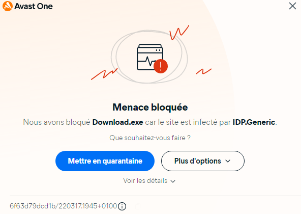
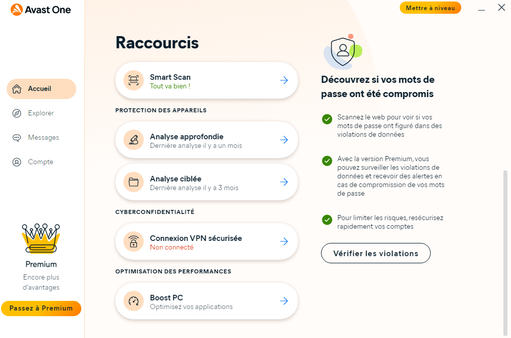

principale d'Avast
One
Ils sont embêtants, ces Virus, mais, Comment fonctionnent-ils ?
Comment (essayer) de s'en défendre ?
Avec quoi ?
Comment (essayer) de s'en débarrasser ?
(etc,,,)
Sommaire |
Ici, c'est marqué Sommaire |
|
1 : Comment (essayer) de s'en défendre, via
quels outils ? 1-1 : Comment ça
marche, un Antivirus ? 1-2 : Présentation d'un Anti Virus : Avast One, 1-3 : Des outils avancés 2 : Rahh, les virus 2-0 : Qu’est-ce qu’un virus informatique ? 2-1 : Comment fonctionne un Virus ? 2-2 : Comment les virus informatiques se propagent-ils ? 2-3 :Que font les virus informatiques ? 2-4 :Tous les appareils sont-ils susceptibles d’être infectés ? 2-5 :Types de virus informatiques 3:bye bye,les virus 3-0 :Comment éviter les dernières menaces liées aux virus informatiques ? 3-1 : Ubuntu, l'OS
sécurisé |
Et là, on voit les chapitres, qui font les pitres Principale Source |
1-Oh, mais tais-toi, le 1 ! -Mais non, c'est pour indiquer qu'on est au chapitre un,
Comment (essayer) de s'en défendre, via quels outils ?
Déjà, on peut installer un antivirus,
1-1 :Comment ça marche, un Antivirus ?
|
Un
Antivirus, ça Analyse les fichier en les Décompilant.
Car oui, un ordinateur a besoin d'application en binaire pour utiliser l'appli en question. Donc, l'Antivirus va : 1, Transformer le binaire en code. 2, L'analyser. 3, Nous dire si c'est un virus ou pas. Mais, les antivirus ont souvent des fonctionnalités payantes, comme le VPN, pour ne pas ce faire pister sur le Web. |
|
Plusieurs Anti-Virus assez connus, Comme Avast, AVG, Microsoft Defender, Avira,,, Nouveau Logo d'Avast depuis 2022 |
1-2 : Présentation d'un Anti Virus : Avast One,
Il est téléchargeable sur Avast,com, et j'en suit bien satisfait,
Un Problème :Les
« Virus »Idp.generic ou idp.ares.generic

Car oui, il analyse d'une manière « Non appropriée » les virus de ce type, Mais bon, tout a un inconvénient,,,
Bref, voici la page
d'accueil :
|
Page principale d'Avast One |
|  |
La page des raccourcis d'Avast One, accès depuis le boutons Racourcis dans la Page Principale |
Voici les 6 Option Gratuites les plus importantes pour la sécurité de l'appareil, dans Explorer, à gauche :
-Scan Center, pour les scans antivirus,
-Agent des Fichiers, Pour sécuriser des Fichiers,
-Agent Web, Pour analyser le « traffic » de votre ordinateur au Web,
-Protection contre les ransomware, Pour empêcher les virus qui bloquent vos fichiers et vous demandent une rançon pour récupérer vos fichiers,
-Pare-feu, pour sécuriser votre réseaux, mais votre réseau «Externe», c'est à dire gérer le réseau, donc autoriser/bloquer l'accès internet à certaines Applications,
-La Quarantaine, Pour isoler les Virus.
1-3 : Des outils avancés
Certaines commandes, comme sfc/scannow,
agissent un peu comme un antivirus. Mais comment les
utiliser ?
Ouvrir l'invite de Commande.
Pour ce faire, cliquez droit sur le logo Windows de la barre
des tâches, puis cliquez sur Invite de commande(admin) Ou
Windows PowerShell(admin), et faites "cmd"
[entrée] puis :
Si vous Souhaitez lancer
une session antivirus, faites « attrib -r -s -h
/d /s *.* »
Si vous Souhaitez lancer
une analyse de votre système, faites « sfc/scannow »
Et voilà !
2
Rahh, les virus
2-0 : Qu’est-ce qu’un virus informatique ?
Citation du site d'Avast : « Certains virus sont juste gênants, mais la plupart d’entre eux sont destructeurs et visent à infecter et prendre le contrôle de vos appareils. Un virus peut se propager d’un ordinateur et d’un réseau à l’autre en s’autoreproduisant, tout comme un virus biologique passe d’une personne à une autre. »
2-1 : Comment fonctionne un Virus ?
Le terme « virus informatique » est un terme générique qui comprend de nombreux types différents de virus, de mécanismes de diffusion et d’effets. En définissant exactement le fonctionnement des virus, il est possible de les diviser en deux catégories : ceux qui infectent et commencent à se reproduire dès qu’ils s’introduisent dans votre ordinateur et ceux qui restent inactifs et attendent que vous les activiez (par exemple en exécutant leur code sans le vouloir).
Citation du site d'Avast : «

Les virus traversent quatre phases évolutives (inspirées du cycle de vie des virus décrit par les biologistes).
Phase inactive : le virus reste dissimulé dans votre système, en attente.
Phase de propagation : le virus amorce son attaque : il se reproduit et place des copies de lui-même dans des fichiers, des programmes et d’autres parties de votre disque. Les clones peuvent se modifier légèrement pour éviter d’être détectés et s’autoreproduisent à leur tour, ce qui donne naissance à de nouveaux clones, et ainsi de suite.
Phase de déclenchement : une action spécifique est généralement requise pour déclencher ou activer le virus. Il peut s'agir d'une action effectuée par l'utilisateur, comme cliquer sur une icône ou ouvrir une application. Certains autres virus sont programmés pour prendre vie après un certain temps, par exemple après que votre ordinateur a redémarré dix fois (le but de cette pratique est de masquer l’origine du virus).
Phase d’exécution : le « spectacle » commence. Le virus libère sa charge utile, le code malveillant qui nuit à votre appareil. »
2-2 : Comment les virus informatiques se propagent-ils ?
Citation du site d'Avast : « Les virus informatiques disposent de plusieurs mécanismes de propagation par Internet. Voici comment des virus sont susceptibles de s’introduire dans votre ordinateur :
 E-mails : méthode de
prédilection des cybercriminels,
les e-mails peuvent également transmettre des pièces
jointes nuisibles (sous la forme de fichiers exécutables
au format .EXE ou .ZIP) ou des liens
malveillants, voire contenir une source d’infection
directement dans le corps du message via HTML.
E-mails : méthode de
prédilection des cybercriminels,
les e-mails peuvent également transmettre des pièces
jointes nuisibles (sous la forme de fichiers exécutables
au format .EXE ou .ZIP) ou des liens
malveillants, voire contenir une source d’infection
directement dans le corps du message via HTML.
 Téléchargements : les pirates peuvent
dissimuler des virus dans des applications, des
documents envoyés via un service de partage de fichiers,
des plug-ins et tout autre lieu où se trouvent des
fichiers disponibles au téléchargement.
Téléchargements : les pirates peuvent
dissimuler des virus dans des applications, des
documents envoyés via un service de partage de fichiers,
des plug-ins et tout autre lieu où se trouvent des
fichiers disponibles au téléchargement.
 Services
de messagerie : les virus peuvent être propagés
via des messages SMS ou des services de messagerie tels
que Facebook, Messenger, WhatsApp et Instagram. Dans ce
cas, à l’image des e-mails, ils prennent la forme de
liens, de pièces jointes et de fichiers exécutables
malveillants.
Services
de messagerie : les virus peuvent être propagés
via des messages SMS ou des services de messagerie tels
que Facebook, Messenger, WhatsApp et Instagram. Dans ce
cas, à l’image des e-mails, ils prennent la forme de
liens, de pièces jointes et de fichiers exécutables
malveillants.
 Logiciels
obsolètes : si vous n’avez pas effectué de
mises à jour de vos applications ou de vos systèmes
d’exploitation depuis un certain temps, des
vulnérabilités sont certainement présentes et les
cybercriminels se feront un plaisir de les exploiter pour
introduire des virus.
Logiciels
obsolètes : si vous n’avez pas effectué de
mises à jour de vos applications ou de vos systèmes
d’exploitation depuis un certain temps, des
vulnérabilités sont certainement présentes et les
cybercriminels se feront un plaisir de les exploiter pour
introduire des virus.
 Malvertising
(publicités malveillantes) : les virus peuvent être
dissimulés dans des publicités en ligne, telles que des
bannières publicitaires. Ce qui rend le malvertising
(messages publicitaires malveillants) extrêmement
dangereux est le fait que les criminels peuvent
dissimuler leur code malveillant jusque dans des sites
web fiables tels que ceux du New York Times et de
la BBC, tous deux ayant été frappés par ce
fléau. »
Malvertising
(publicités malveillantes) : les virus peuvent être
dissimulés dans des publicités en ligne, telles que des
bannières publicitaires. Ce qui rend le malvertising
(messages publicitaires malveillants) extrêmement
dangereux est le fait que les criminels peuvent
dissimuler leur code malveillant jusque dans des sites
web fiables tels que ceux du New York Times et de
la BBC, tous deux ayant été frappés par ce
fléau. »
2-3 : Que font les virus informatiques ?
Lorsqu'il entre dans sa phase d'exécution et libère sa charge utile, un virus informatique lance son attaque et vous commencerez à en ressentir les effets négatifs sur votre appareil. Le virus prend le contrôle du code et des ressources de votre système pour se reproduire, raison pour laquelle vous pourriez rencontrer des difficultés durant cette phase. Méfiez-vous des effets décrits ci-dessous(Citation du site d'Avast) : «
Une lenteur exaspérante
Des fichiers manquants ou endommagés
Des fenêtres contextuelles qui s’affichent sans cesse
Le disque dur qui tourne à plein régime en permanence
Des logiciels ou le système d’exploitation qui s’interrompent ou se bloquent constamment
Certaines opérations s’effectuent sains raison apparente, par exemple des applications s’ouvrent seules ou de nouveaux fichiers apparaissent de façon aléatoire
En plus des problèmes de performances, les virus peuvent également être à l’origine du vol de données personnelles sensibles comme les noms d’utilisateur, les mots de passe et les informations des cartes bancaires. Certains virus peuvent spammer tous vos contacts pour les inciter à exécuter une action qui va introduire le virus chez eux, afin de poursuivre leur propagation. »
2-4 : Tous les appareils sont-ils susceptibles d’être infectés ?
Pour répondre à cette question, un virus n’est rien d’autre qu’un type de malware. Il y a énormément d’autres formes d’infection susceptibles de s’attaquer à votre ordinateur pour l’endommager, voler vos données et semer le chaos.
Citation du site d'Avast : « Tous les appareils, y compris les équipements Mac, iOS et Android, peuvent contracter un malware. En fait, tout appareil susceptible de se connecter à Internet est également exposé aux malwares, même les appareils intelligents comme les cafetières !
Des ransomwares aux spywares en passant par les chevaux de Troie, il existe des souches particulièrement agressives de malwares dont vous devez vous garder et protéger vos gadgets. »
2-5 : Types de virus informatiques
Même en se limitant à parler de virus (en laissant de côté d’autres formes de malwares qui ne s’autoreproduisent pas), il en existe de très nombreux types distincts.
Voici quelques exemples de virus informatiques qui pullulent sur Internet (Citation du site d'Avast) : «
Virus à action directe : la forme la plus courante et la plus simple à créer. Les virus à action directe pénètrent dans votre ordinateur où ils sèment le chaos (généralement en s’attachant à des fichiers au format .COM ou .EXE) avant de s’auto-supprimer. Le célèbre virus Vienna recherchait des fichiers au format .COM pour les infecter et/ou les détruire. C’est le premier virus à avoir été vaincu par un programme antivirus en 1987, mais le correctif n’était pas disponible pour les personnes qui vivaient dans des pays soumis à des régimes communistes. En 1988, Pavel Baudis, le fondateur d’Avast, a également vaincu ce virus et a finalement pu apporter une solution aux personnes qui n’avaient pas eu accès au premier correctif.
Virus du secteur d'amorce : comme son nom l'indique, les virus du secteur d'amorce se faufilent dans votre secteur d'amorce (chargé de lancer le système d'exploitation de votre ordinateur au démarrage) pour infecter d'emblée votre mémoire. Ces types de virus se propageaient traditionnellement via des supports matériels, comme des disquettes, des clés USB et des CD. Dans la mesure où ces derniers deviennent obsolètes, le virus disparaît à son tour, mis à part sa dernière apparition en 2014 sous la forme du virus Stoner, qui affichait des messages de soutien à la légalisation de la marijuana.
Virus résident : il s’agit d’un autre type de virus qui infecte la mémoire RAM (mémoire à court terme). Logé dans votre RAM, ce virus peut subsister même lorsque l'élément infectant a été supprimé. Un exemple notoire de ce genre de virus est le virus Magistr, qui infecte tous vos amis en spammant la liste entière de contacts de votre messagerie électronique. Ce virus se livre également à la destruction massive de fichiers, détruit la mémoire de la carte mère de votre ordinateur et peut arriver jusqu’à vous envoyer des messages grossiers.
Virus multipartite : les virus multipartites sont particulièrement agressifs car ils montent en puissance en infectant à la fois vos fichiers et votre espace d'amorce. Ils sont très difficiles à éradiquer car ils peuvent dissimuler des morceaux de leur code dans des fichiers ou l'espace d'amorce. Le virus Invader en était l’un des exemples les plus connus : il commençait à écraser votre disque dur dès que vous appuyiez sur CTRL+ALT+SUPPR pour tenter de vous en débarrasser.
Virus polymorphes : les virus polymorphes, autre catégorie de virus coriaces, se cachent en changeant constamment de forme. Au fur et à mesure qu'ils se répliquent, leurs clones varient légèrement, ce qui en complique énormément la détection. Un exemple de virus polymorphe est VirLock, qui change de forme en y intégrant une partie de ransomware qui verrouille vos fichiers et vous demande de payer une rançon pour les récupérer.
Virus de macro : les virus de macro sont conçus pour être dissimulés dans des fichiers de documents Word, notamment aux formats .DOC ou .DOCX. Lorsque vous téléchargez le fichier, vous êtes invité à activer les macros, ce qui déclenche le virus. Les ransomwares utilisent également volontiers des macros infectées. Tel est le cas de la souche Locky, qui visait essentiellement des institutions sanitaires en chiffrant leurs fichiers et exigeant le paiement d’une rançon pour les déchiffrer.
3
bye bye,les virus
3-0 :Comment éviter les dernières menaces liées aux virus informatiques ?
Citation du site d'Avast : « De bonnes habitudes de navigation vous mettent à l'abri des toutes dernières menaces liées aux virus informatiques. Voici quelques astuces qu’il faut garder à l’esprit :
Méfiez-vous de tout : méfiez-vous des promotions, des liens et des pièces jointes que vous n’attendiez pas dans vos e-mails et vos messages en général.
N'achetez que de l'authentique : évitez de pirater des fichiers média tels que de la musique ou des films à partir de plateformes de partage de fichiers. Vous ne pouvez jamais être sûr de rien lorsque vous téléchargez un fichier d’une source non vérifiée.
Soyez prudent même lorsque vous effectuez des achats dans des boutiques bien connues : Google Play Store et l'App Store d'Apple surveillent de très près la sécurité de leurs applications, mais certains logiciels malveillants se glissent parfois et parviennent à infecter quelques appareils avant d'être supprimés. Vérifiez qu’une application est sûre avant de la télécharger.
Ignorez les publicités et les pop-ups : des publicités frauduleuses peuvent infiltrer des virus ou d'autres formes de codes malveillants dans les messages publicitaires et il est donc préférable de ne jamais cliquer sur les publicités en ligne. Si l’un des produits présentés vous intéresse, rendez-vous directement sur le site web de l’entreprise.
Installez les mises à jour : les seules fenêtres contextuelles à ne pas ignorer sont les notifications de mises à jour de votre système d'exploitation ou d'autres logiciels. Ces mises à jour comprennent souvent des correctifs de sécurité qui corrigent les vulnérabilités, il est donc important de les appliquer immédiatement.
Ajoutez une couche supplémentaire de protection : quel que soit votre niveau de compétence, les virus peuvent toujours vous filer entre les doigts. Renforcez votre ligne de défense à l’aide d’un antivirus puissant comme Avast One qui servira de barrière de sécurité et bloquera les virus avant même qu’ils n’approchent votre système. »
 Bureau d'Ubuntu, avec la task bar, et l'explorateur de fichier à gauche |
Comme je l'ai appris le samedi 23 avril 2022 au HackLab, Ubuntu possède un Store avec des applications Libres et Vérifiées par Ubuntu(L'entreprise). Donc, il est peu probable que votre ordinateur attrape un virus. Comme je l'ai dit plutôt, Toutes les applications dans ce store sont Libres, Et donc le code source facile à analyser. Mais il peut tout de même y avoir des virus, Vu que c'est un store 'publique', Donc n'importe qui pourrais envoyer un Virus dessus, Mais il y a une équipe contre cela. Oh, et, comme vous le voyez à gauche, L'interface est plus sofistiquée, plus "moderne" Et modifiable facilement. Et Ubuntu est + sécurisé que Windows, on recommande d'installer un Anti-virus quand même sur Ubuntu, car comme on dit : "On est jamais trop prudent" |
3-2 : Comment supprimer un virus
d’un PC ?
Ici > Avast.com/fr-fr/c-how-to-remove-virus-from-pc#topic-2.
Fin... Mais avant de se
quitter,,,
Je vous donne 2 sites Avec des infos Sur les Virus :
https://www.avast.com/fr-fr/c-academy
https://blog.avast.com/fr/
Et n'oubliez pas de ne pas attraper sur le web le...
Covid-19 :p
{kind=link}